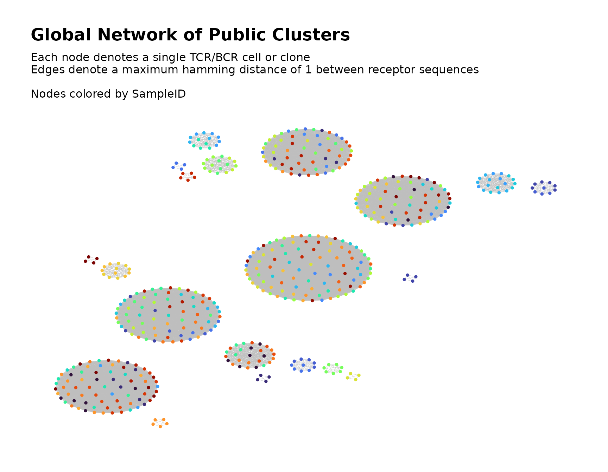
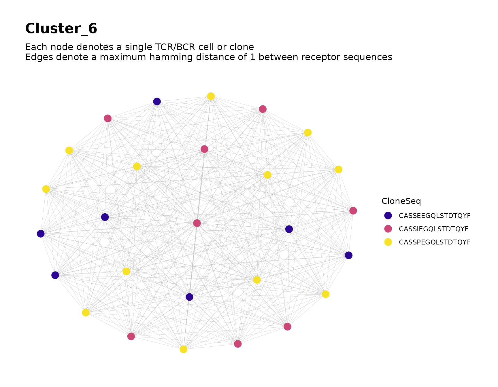

Introduction
The NAIR package includes a set of functions that
facilitate searching for public TCR/BCR clusters across multiple samples
of Adaptive Immune Receptor Repertoire Sequencing (AIRR-Seq) data.
In this context, a public cluster consists of similar TCR/BCR clones (e.g., those whose CDR3 amino acid sequences differ by at most one amino acid) that are shared across samples (e.g., across individuals or across time points for a single individual).
Overview of Process
- Identify prominent clusters within each sample.. For each sample, construct the repertoire network and use cluster analysis to partition the network into clusters. From each sample, select clusters based on node count and clone count.
- Construct global network using the selected clusters. Combine the selected data from step 1 into a single global network. Use cluster analysis to partition the global network into clusters, which are considered as the public clusters.
- Perform additional tasks such as labeling the global clusters in the visual plot and analyzing individual clusters of interest.
Simulate Data for Demonstration
We simulate some toy data for demonstration.
Our toy data includes 30 samples, each containing 30 observations.
Some sequences are simulated with a tendency to appear in relatively few samples, while others are simulated with a tendency to appear in many samples.
set.seed(42)
library(NAIR)
#> Welcome to NAIR: Network Analysis of Immune Repertoire.
#> Get started using `vignette("NAIR")`, or by visiting
#> https://mlizhangx.github.io/Network-Analysis-for-Repertoire-Sequencing-/
data_dir <- tempdir()
dir_input_samples <- file.path(data_dir, "input_samples")
dir.create(dir_input_samples, showWarnings = FALSE)
samples <- 30
sample_size <- 30 # (seqs per sample)
base_seqs <- c(
"CASSIEGQLSTDTQYF", "CASSEEGQLSTDTQYF", "CASSSVETQYF",
"CASSPEGQLSTDTQYF", "RASSLAGNTEAFF", "CASSHRGTDTQYF", "CASDAGVFQPQHF",
"CASSLTSGYNEQFF", "CASSETGYNEQFF", "CASSLTGGNEQFF", "CASSYLTGYNEQFF",
"CASSLTGNEQFF", "CASSLNGYNEQFF", "CASSFPWDGYGYTF", "CASTLARQGGELFF",
"CASTLSRQGGELFF", "CSVELLPTGPLETSYNEQFF", "CSVELLPTGPSETSYNEQFF",
"CVELLPTGPSETSYNEQFF", "CASLAGGRTQETQYF", "CASRLAGGRTQETQYF",
"CASSLAGGRTETQYF", "CASSLAGGRTQETQYF", "CASSRLAGGRTQETQYF",
"CASQYGGGNQPQHF", "CASSLGGGNQPQHF", "CASSNGGGNQPQHF", "CASSYGGGGNQPQHF",
"CASSYGGGQPQHF", "CASSYKGGNQPQHF", "CASSYTGGGNQPQHF",
"CAWSSQETQYF", "CASSSPETQYF", "CASSGAYEQYF", "CSVDLGKGNNEQFF")
# relative generation probabilities
pgen <- cbind(
stats::toeplitz(0.6^(0:(sample_size - 1))),
matrix(1, nrow = samples, ncol = length(base_seqs) - samples))
simulateToyData(
samples = samples,
sample_size = sample_size,
prefix_length = 1,
prefix_chars = c("", ""),
prefix_probs = cbind(rep(1, samples), rep(0, samples)),
affixes = base_seqs,
affix_probs = pgen,
num_edits = 0,
output_dir = dir_input_samples,
no_return = TRUE
)
#> [1] TRUEEach sample’s data frame is saved to its own file using the RDS file
format. The files are named “Sample1.rds”,
“Sample2.rds”, etc. A character string containing the
directory path is assigned to the R environment variable
dir_input_samples for later reference.
The first few rows of the data for the first sample appear as follows:
# View first few rows of data for sample 1
head(readRDS(file.path(dir_input_samples, "Sample1.rds")))
#> CloneSeq CloneFrequency CloneCount SampleID
#> 1 CASSIEGQLSTDTQYF 0.02606559 2832 Sample1
#> 2 CASSEEGQLSTDTQYF 0.03718396 4040 Sample1
#> 3 CASSSPETQYF 0.03182726 3458 Sample1
#> 4 CASSIEGQLSTDTQYF 0.04615781 5015 Sample1
#> 5 CAWSSQETQYF 0.06006498 6526 Sample1
#> 6 CASSEEGQLSTDTQYF 0.03363123 3654 Sample1Step 1: Identify Prominent Clusters Within Each Sample
First, we use findPublicClusters() to search across
samples and select clones for inclusion in the global network.
Each sample’s repertoire network is constructed individually, and cluster analysis is used to partition each network into clusters. The clusters are then filtered according to node count and clone count based on user-specified criteria. The AIRR-Seq data for the clusters that remain after filtering is saved to files to be used as inputs for step 2.
Below, we explain how to use findPublicClusters().
Input Data for Step 1
Each sample’s AIRR-Seq data must be contained in a separate file, with observations indexed by row, and with the same columns across samples.
File Paths of Sample Data
The file_list parameter accepts a character vector
containing file paths (or a list containing file paths and connections),
where each element corresponds to a file containing a single sample.
# create vector of input file paths for step 1 (one per sample)
input_files <- file.path(dir_input_samples,
paste0("Sample", 1:samples, ".rds")
)
head(input_files)
#> [1] "/tmp/RtmpBNFYpT/input_samples/Sample1.rds"
#> [2] "/tmp/RtmpBNFYpT/input_samples/Sample2.rds"
#> [3] "/tmp/RtmpBNFYpT/input_samples/Sample3.rds"
#> [4] "/tmp/RtmpBNFYpT/input_samples/Sample4.rds"
#> [5] "/tmp/RtmpBNFYpT/input_samples/Sample5.rds"
#> [6] "/tmp/RtmpBNFYpT/input_samples/Sample6.rds"File Format of Sample Data
The file format of the input files is specified by the
input_type parameter. The supported values are
"rds", "rda", "csv",
"csv2", "tsv" and "table".
Depending on the input type, further options are specified with
data_symbols or read.args.
Refer here
and to loadDataFromFileList() for details and examples.
Sequence Column in Sample Data
The seq_col parameter specifies the column containing
the TCR/BCR sequences within each sample. It accepts the column name (as
a character string) or the column position index.
Count Column in Sample Data
The optional count_col parameter specifies the column
containing the clone count (clonal abundance) within each sample. It
accepts the column name (as a character string) or the column position
index. If provided, clone counts will be
considered when filtering the clusters.
Custom Sample IDs (Optional)
Each clone’s sample ID is included in the output. By default, these
are "Sample1", "Sample2", etc., according to
the order in file_list.
The optional sample_ids parameter assigns custom sample
IDs. It accepts a vector of the same length as file_list,
where each entry is the corresponding sample ID.
Filtering the Sample Data
The clones from each sample are filtered to remove any irrelevant
data. By default, clones with sequences that are less than three
characters in length, as well as sequences containing any of the
characters *, _ or |, will be
excluded. The min_seq_length and drop_matches
parameters control the filter settings. Refer here
for details.
Construction of Sample Networks
The parameters that control the construction of each sample’s network are shown below along with their default values.
dist_type = "hamming"dist_cutoff = 1drop_isolated_nodes = TRUE
Refer here for their meaning and usage.
Clustering Algorithm for Sample Networks
By default, clustering within each sample’s network is performed
using igraph::cluster_fast_greedy(). A different clustering
algorithm can be specified using the cluster_fun parameter,
as described here.
Filtering the Sample Clusters
The following parameters control the criteria used to select clusters from each sample.
Top \(n\) Clusters
Within each sample, the \(n = 20\)
clusters with the greatest node count are automatically selected. The
value of \(n\) can be adjusted using
the top_n_clusters parameter.
Minimum Node Count
By default, any cluster containing at least ten nodes will be
selected This value can be adjusted using the
min_node_count parameter.
Minimum Clone Count
By default, any cluster with an aggregate clone count (summed over
all nodes) of at least 100 will be selected. This value can be adjusted
using the min_clone_count parameter.
This criterion only applies if clone counts are
provided using the count_col parameter.
Output Settings for Step 1
findPublicClusters() does not return any direct output.
Instead, data for the selected clusters is saved to files to be used as
inputs in step 2. The following parameters control the output
settings.
Variables to Keep From Sample Data
By default, the output includes all variables from the original sample data. These variables can be used later as metadata in visualizations of the global network.
To keep only a subset of the original variables, specify the
variables to keep using the subset_cols parameter, which
accepts a character vector of column names or a vector of column
indices. The sequence column is always included.
Output Directory for Step 1
The output_dir parameter specifies the output directory.
It accepts a character string containing the directory path. The
directory will be created if it does not exist.
# create output directory path for step 1
dir_filtered_samples <- file.path(data_dir, "filtered_samples")Output File Format for Step 1
By default, each file is saved as an RDS file. This can be changed
using the output_type parameter. Other accepted values are
"rda" and "csv".
Saving Full Networks for Each Sample (Optional)
By default, findPublicClusters() saves data only for the
selected clusters from each sample. If desired, data for each sample’s
entire network can also be saved by passing a directory path to the
output_dir_unfiltered parameter. The full network data for
each sample is the output
returned by buildNet(). The
output_type_unfiltered parameter specifies the file format
in the same manner described [here]((https://mlizhangx.github.io/Network-Analysis-for-Repertoire-Sequencing-/articles/buildRepSeqNetwork.html#output-file-format)
for the output_type parameter of
buildNet().
Visualization of Sample Networks (Optional)
By default, findPublicClusters() does not produce visual
plots. The visualization of interest is of the global network in step 2.
A plot of each sample’s full network can be produced using
plots = TRUE. Specifying print_plots = TRUE
prints these to the R plotting window. The plots will be saved if output_dir_unfiltered is
non-null. By default, the nodes in each plot are colored according to
cluster membership. A different variable can be specified using the
color_nodes_by parameter as detailed here
(or here
for multiple variables).
Refer here to learn about other parameters for customizing the visualization.
Demonstration, Step 1
findPublicClusters(input_files,
input_type = "rds",
seq_col = "CloneSeq",
count_col = "CloneCount",
min_seq_length = NULL,
drop_matches = NULL,
top_n_clusters = 3,
min_node_count = 5,
min_clone_count = 15000,
output_dir = dir_filtered_samples
)Two new directories are created within the specified output directory:
list.files(dir_filtered_samples)
#> [1] "cluster_meta_data" "node_meta_data"These directories contain cluster-level and node-level metadata, respectively, for the selected clusters from each sample. We require only the node metadata for step 2.
head(list.files(file.path(dir_filtered_samples, "node_meta_data")))
#> [1] "1_Sample1.rds" "10_Sample10.rds" "11_Sample11.rds" "12_Sample12.rds"
#> [5] "13_Sample13.rds" "14_Sample14.rds"Step 2: Global Network of Public Clusters
buildPublicClusterNetwork() combines the selected
clusters from all samples into a single global network, where a new
round of cluster analysis is performed to partition the global network
into clusters.
Input Data for Step 2
The input files for buildPublicClusterNetwork() are the
node metadata files from the output of step 1. Each
file contains data for one sample.
File Paths of Node Metadata From Step 1
The file_list parameter accepts a character vector of
file paths for the input files, which are located in the
node_meta_data subdirectory of the output directory from step 1.
# Directory of node metadata from step 1
dir_filtered_samples_node <-
file.path(dir_filtered_samples, "node_meta_data")
# Vector of file paths to node metadata from step 1
files_filtered_samples_node <-
list.files(dir_filtered_samples_node, full.names = TRUE)File Format of Node Metadata From Step 1
If findPublicClusters() was called with a non-default
value of output_type, this value must be passed to the
input_type parameter of
buildPublicClusterNetwork().
Argument Values From Step 1
The seq_col and count_col parameters
specify the input data columns containing receptor sequences and clone
counts, respectively. Users should pass the same argument values to
these parameters as they did when calling
findPublicClusters() during step 1.
Global Network Analysis
Network Construction
The parameters that control construction of the global network are shown below along with their default values.
dist_type = "hamming"dist_cutoff = 1drop_isolated_nodes = FALSE
Refer here for their meaning and usage.
Clustering Algorithm for Global Network
A clustering algorithm is used to partition the global network graph into densely-connected subgraphs (clusters). Each cluster can contain clones from different samples.
By default, clustering within is performed using
igraph::cluster_fast_greedy(). A different clustering
algorithm can be specified using the cluster_fun parameter,
as described here.
Visualization of Global Network
By default, buildPublicClusterNetwork() produces a
visual plot of the global network graph with the nodes colored according
to sample ID.
The color_nodes_by parameter specifies the variable used
to color the nodes. It accepts a character string naming a variable kept from the original sample data or one of the
node-level network properties listed
here.
color_nodes_by also accepts a vector naming multiple
variables. One
plot will be created for each entry, with the nodes colored according to
the respective variable.
Refer here to learn about other parameters for customizing the visualization.
Output Settings for Step 2
buildPublicClusterNetwork() returns a list containing
plots, metadata and other network objects, with the same
structure as the output of buildRepSeqNetwork().
The output can be saved to a local directory using the parameters
output_dir, output_type and
output_name, whose usage is described here.
Demonstration, Step 2
public_clusters <- buildPublicClusterNetwork(files_filtered_samples_node,
seq_col = "CloneSeq",
count_col = "CloneCount",
size_nodes_by = 1,
print_plots = TRUE
) The returned list contains the following elements:
names(public_clusters)
#> [1] "details" "igraph" "adjacency_matrix" "node_data"
#> [5] "cluster_data" "plots"The elements are described here. We inspect the node metadata and cluster metadata.
Node Metadata for Global Network
The list element node_data is a data frame containing
metadata for the network nodes, where each row represents a distinct
clone corresponding to a node in the global network graph.
nrow(public_clusters$node_data)
#> [1] 517
# variables in the node-level metadata
names(public_clusters$node_data)
#> [1] "CloneSeq" "CloneFrequency"
#> [3] "CloneCount" "SampleID"
#> [5] "SampleLevelNetworkDegree" "ClusterIDInSample"
#> [7] "SampleLevelTransitivity" "SampleLevelCloseness"
#> [9] "SampleLevelCentralityByCloseness" "SampleLevelEigenCentrality"
#> [11] "SampleLevelCentralityByEigen" "SampleLevelBetweenness"
#> [13] "SampleLevelCentralityByBetweenness" "SampleLevelAuthorityScore"
#> [15] "SampleLevelCoreness" "SampleLevelPageRank"
#> [17] "PublicNetworkDegree" "ClusterIDPublic"
#> [19] "PublicTransitivity" "PublicCloseness"
#> [21] "PublicCentralityByCloseness" "PublicEigenCentrality"
#> [23] "PublicCentralityByEigen" "PublicBetweenness"
#> [25] "PublicCentralityByBetweenness" "PublicAuthorityScore"
#> [27] "PublicCoreness" "PublicPageRank"All variables kept from the original sample
data during step 1 are present. The variable
ClusterIDPublic contains the global cluster membership,
while ClusterIDInSample contains the in-sample cluster
membership. Node-level
network properties are also present. Those beginning with
SampleLevel correspond to the sample networks, while those
beginning with Public correspond to the global network.
# View some of the node metadata for the global network
view_cols <- c("CloneSeq", "SampleID", "ClusterIDInSample", "ClusterIDPublic")
public_clusters$node_data[49:54 , view_cols]
#> CloneSeq SampleID ClusterIDInSample ClusterIDPublic
#> Sample11.27 CASSGAYEQYF Sample11 3 2
#> Sample11.29 CASSYLTGYNEQFF Sample11 1 11
#> Sample11.30 CAWSSQETQYF Sample11 4 4
#> Sample12.6 CASSLNGYNEQFF Sample12 1 12
#> Sample12.11 CASSYLTGYNEQFF Sample12 2 11
#> Sample12.14 CASSLNGYNEQFF Sample12 1 12The row names indicate the original row ID of each clone within its sample’s data.
Cluster Metadata for Global Network
The list element cluster_data is a data frame containing
metadata for the public clusters, where each row corresponds to a
cluster in the global network.
# variables in the cluster-level metadata
names(public_clusters$cluster_data)
#> [1] "cluster_id" "node_count"
#> [3] "mean_seq_length" "mean_degree"
#> [5] "max_degree" "seq_w_max_degree"
#> [7] "agg_count" "max_count"
#> [9] "seq_w_max_count" "diameter_length"
#> [11] "global_transitivity" "assortativity"
#> [13] "edge_density" "degree_centrality_index"
#> [15] "closeness_centrality_index" "eigen_centrality_index"
#> [17] "eigen_centrality_eigenvalue"Refer here for more information about the cluster-level network properties.
# View some of the cluster metadata for the global network
head(public_clusters$cluster_data[, 1:6])
#> cluster_id node_count mean_seq_length mean_degree max_degree seq_w_max_degree
#> 1 1 96 15 95 95 CASSYTGGGNQPQHF
#> 2 2 75 11 74 74 CASSGAYEQYF
#> 3 3 73 11 72 72 CASSSPETQYF
#> 4 4 66 11 65 65 CAWSSQETQYF
#> 5 5 61 14 60 60 CSVDLGKGNNEQFF
#> 6 6 27 16 26 26 CASSIEGQLSTDTQYFStep 3: Additional Tasks
After calling buildPublicClusterNetwork(), the following
tasks can be performed using the returned output.
Labeling the Global Clusters
In order to more easily cross-reference the clusters in the visual plot with the clusters in the data, we can label the clusters with their ID numbers.
This is accomplished using labelClusters() as described
here.
Below, we label the six largest clusters in the plot with their
cluster IDs. The node metadata variable ClusterIDPublic
contains the global cluster membership, so we pass its name to the
cluster_id_col parameter.
public_clusters <-
labelClusters(public_clusters,
top_n_clusters = 6,
cluster_id_col = "ClusterIDPublic",
size = 7
)
public_clusters$plots[[1]]
#> Warning: Removed 511 rows containing missing values (`geom_text()`).
Focusing on Individual Clusters
To focus on a particular cluster, we can subset the node metadata
based on the value of ClusterIDPublic and use
buildNet() to produce plots of the cluster’s graph.
# focus on cluster 1
buildNet(
public_clusters$node_data[public_clusters$node_data$ClusterIDPublic == 1, ],
"CloneSeq",
color_nodes_by = "CloneSeq",
size_nodes_by = 3,
output_name = "Cluster 1",
print_plots = TRUE
)
#> Warning in .checkOutputName(output_name, "MyRepSeqNetwork"): value for
#> 'output_name' may be unsafe for use as a file name prefix. Value changed to
#> "Cluster_1"
# focus on cluster 6
buildNet(
public_clusters$node_data[public_clusters$node_data$ClusterIDPublic == 6, ],
"CloneSeq",
color_nodes_by = "CloneSeq",
color_scheme = "plasma",
size_nodes_by = 4,
output_name = "Cluster 6",
print_plots = TRUE
)
#> Warning in .checkOutputName(output_name, "MyRepSeqNetwork"): value for
#> 'output_name' may be unsafe for use as a file name prefix. Value changed to
#> "Cluster_6"